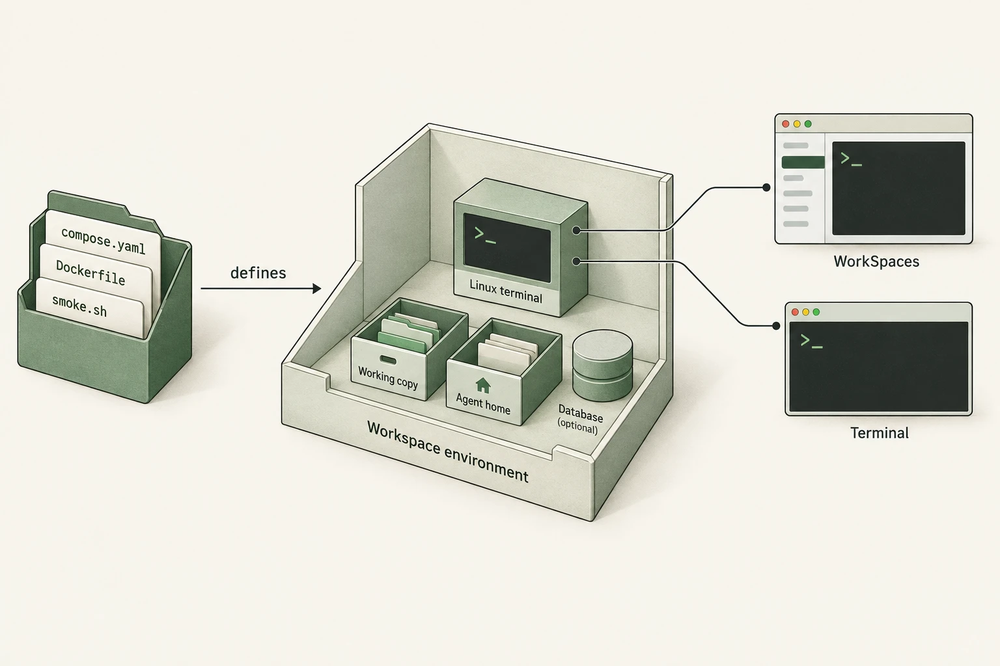

ws-alpharunning
agentLinux · UID 1000Terminal attached. Guest shell running.
postgresproject networkWorking copyhost clone · retained
Agent homenamed volume · retained
Docker Compose workspaces
Work on a small, self-contained set of files. Those files define the Linux tools, terminal, services and storage for a workspace. Enter through WorkSpaces or use Docker Compose directly.
The directory is the definition. Each running workspace has its own clone, processes and persistent data.

The definition, tests, explanation and visual assets live together. You can read the whole example, change the tools or add a service, and test it without building the native app.
Edit the Dockerfile or Compose configuration. Run ./smoke.sh --with-postgres here. Inspect the disposable workspace and its test results, then refine the definition.
For the guide itself, edit index.html and reload it. It uses local images, recordings and inline styles, with no frontend build step.
Lifecycle explorer · illustrated state
agentLinux · UID 1000Terminal attached. Guest shell running.
postgresproject networkagentLinux · UID 1000Its own terminal and processes.
postgresproject networkEach workspace owns a Compose project, clone, home volume and network. Both terminals run in Linux. Changing alpha does not stop beta.
Configuration stays outside. The trusted Compose snapshot and Dockerfile are never mounted into the agent's working copy.
This is a real Docker run with synthetic repositories and cached images. Commands execute at normal speed, including startup and teardown.
A separate recording exercises the production Swift provider: workspace creation, guest setup and Git, the returned terminal command through a real PTY, stop/start/rebuild, scoped deletion and failure recovery. It verifies terminal and backend behavior. Native UI interaction and an authenticated model run are separate checks.
Full test output · Recorded against 5dca13102c27 on September 12, 2026.
Use the reference without WorkSpaces. Give the environment an independent clone and a stable Compose project name, start it, then enter the agent service.
Bash, Git, tmux, Node.js and Python are already there. Install and authenticate your agent inside the environment. Its home volume retains those tools and login state.
# Build and verify two disposable environments
./smoke.sh --with-postgresRequires Git and a local Linux Docker runtime with Compose 2.24+. The test removes its Docker projects and retains temporary fixture files and logs. On Linux, UID 1000 needs write access to each dedicated clone.
Set up a workspace, then enter its terminal ↗WorkSpaces puts a crafted Mac terminal around the environment, with session tabs, splits and file and change inspection. Choose Docker Compose when creating a workspace; the app manages that project's identity and lifecycle.
This provider uses an independent clone, alongside Linux processes, installed tools, the agent's home and persistent storage. The terminal opens inside that complete runtime.
Files stay visible on the host with read-only previews in the app. Git and repository scripts run in the container. Each Terminal Session attaches to its own guest tmux session.
Detaching keeps the guest shell alive. Stopping ends its processes and retains data. The provider also supports rebuild through its API and scoped deletion.
Today, WorkSpaces bundles this base definition when the app is built. Edits here can be tried directly with Compose; using them in new app workspaces requires rebuilding the app. Existing workspaces retain their saved snapshots. Arbitrary directory import and custom stacks are not app controls yet.
Implementation in PR #1620. The app uses the agent service; Postgres is an optional standalone example.
Compose gives each workspace its own runtime and storage. Its configuration is trusted input: review it, keep it outside the agent's clone and use a unique project name.
down --volumes removes the project's home and database data but keeps the host clone. WorkSpaces can also remove the clone when you choose to delete files.